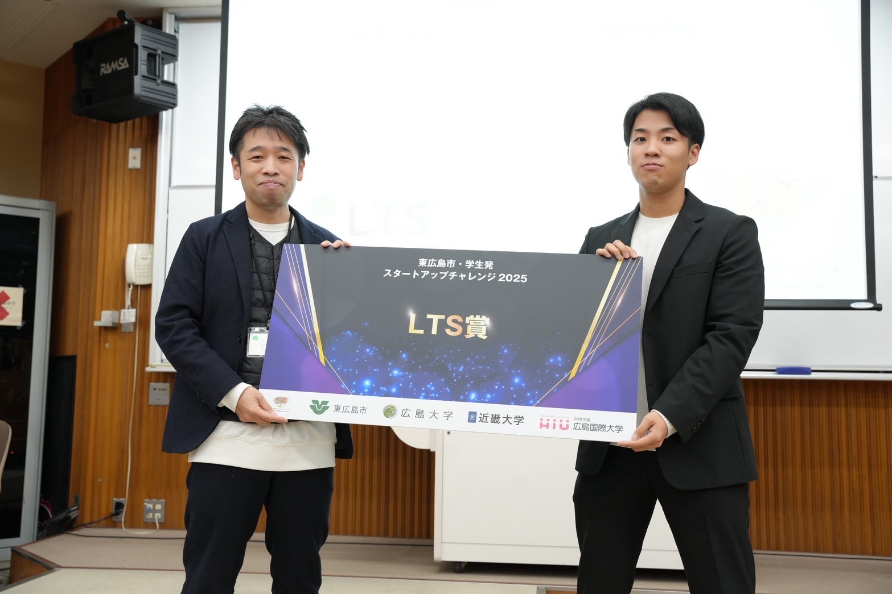
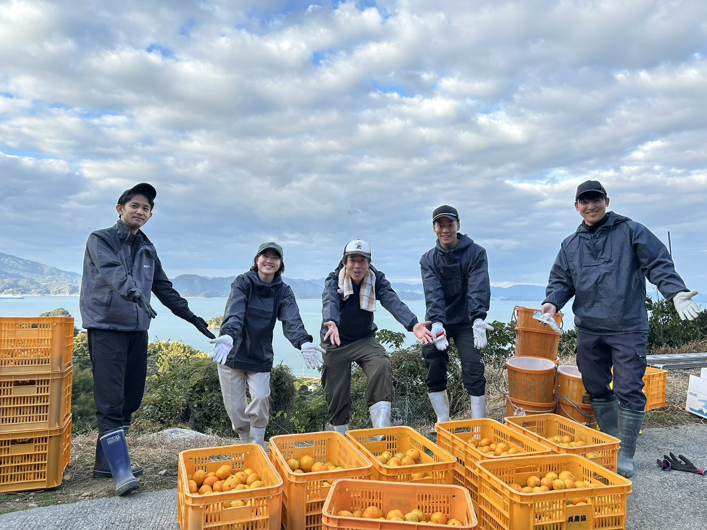

DX業務
業務課題の整理からデジタル導入・運用改善まで、現場に根づくDXを支援します。
実績を見る価値を伝える、未来をつくる。
デザインとテクノロジーで、企業とユーザーをつなぐ体験を提供します。

この度リガーレは広島スタートアップチャレンジにてLTS賞を受賞

JA全農広島✖️リガーレで農業マッチングのコラボをしました

業務改善の事例共有を通して、実務に活かせるDXの考え方を発信しました。

社内データを一元化し、日次の集計作業を短縮。現場判断のスピード向上に貢献しました。

紙運用を見直し、申請から承認までをオンライン化。運用負荷とミスの削減を実現しました。

地域団体と連携し、余剰食品の回収導線を整備。継続運用できる仕組みづくりを支援しました。

食品受け渡しの流れを最適化し、寄付先へのスムーズな配送体制を構築しました。
必要スキルを持つ人材を短期間で配置し、立ち上げフェーズの遅延リスクを抑制しました。
派遣と既存メンバーの連携設計を行い、現場の引き継ぎ負担を軽減して安定稼働につなげました。
CEO
事業戦略と営業統括を担当。地域と企業をつなぐ新しい価値づくりを推進しています。
Off
休日はカフェ巡りとランニング。アイデアを整理しながら次の企画を考える時間を大切にしています。
Project Manager
DX案件の進行管理を担当。課題整理から運用定着まで、現場目線で伴走します。
Off
オフの日はサウナと読書でリフレッシュ。新しい業務改善のヒントを集めるのが習慣です。
Creative Director
ブランド設計とデザインを担当。伝わる表現と使いやすさを両立した体験を設計します。
Off
写真撮影とアート鑑賞が趣味。街歩きの中で見つけた色や形を、クリエイティブに活かしています。
Creative Director
ブランド設計とデザインを担当。伝わる表現と使いやすさを両立した体験を設計します。
Off
休日は料理とアウトドア。手を動かして試すことを楽しみながら、発想の幅を広げています。